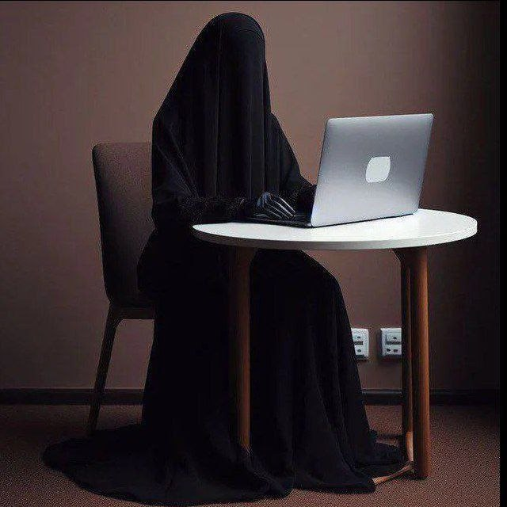
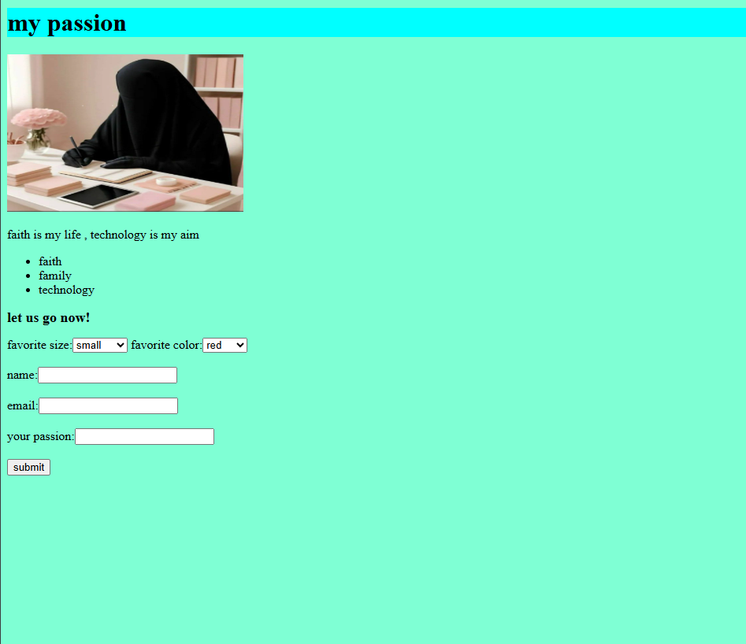
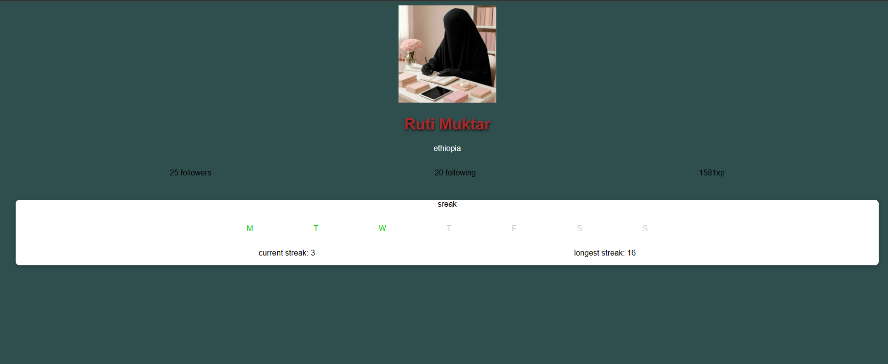
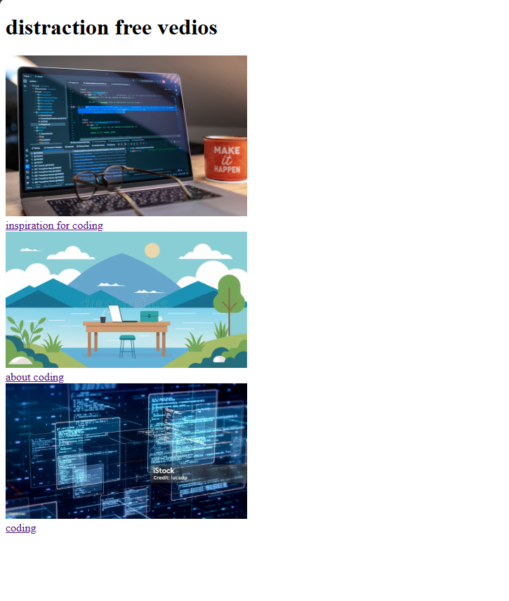

welcome to my world
I am a <Developer/>


description about my passion
I write my own passion in a simple website form. this project include three of my top passions

my daily streak in coding program
I create website which counts my daily streak in coding program. this project shows three days of active challenge in a week and and the other four days of inactive situation!

destraction free vedios
this project was full of html programming language and I code it as my first organized html project.